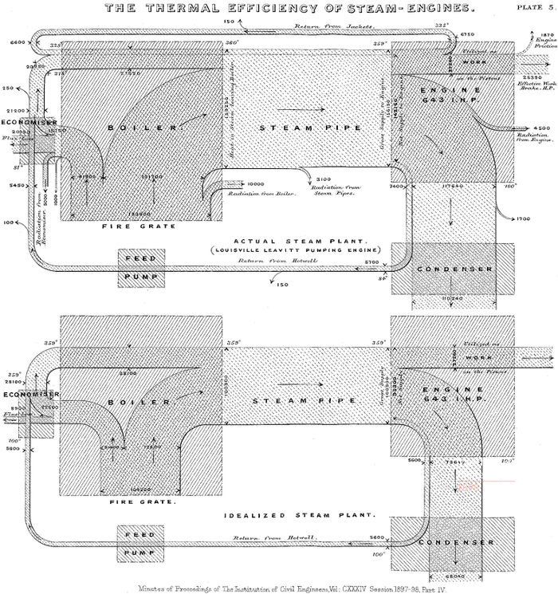
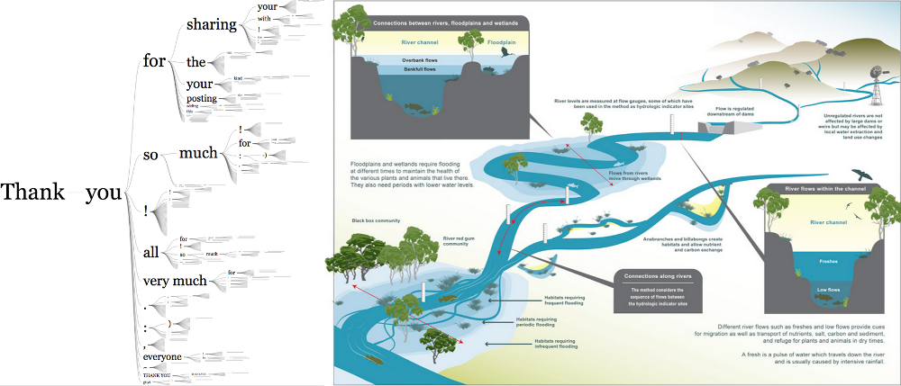
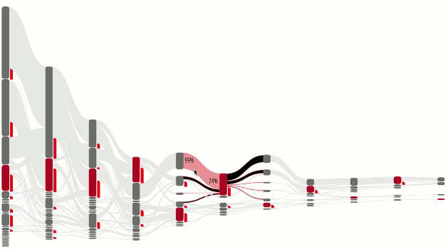

From the original site / 2015-06-09
This archived piece preserves its original text and historical context.
Alluvial Charts and Their Discontents
Sankey diagrams are an increasingly popular data visualization method. Like all network diagrams, a sankey diagrams represents explicit connections between elements. It is a system, rather than a simple collection of correlated datapoints. But their sophisticated visual rhetoric poses difficulties for information designers familiar with bar and line charts. At Netflix I built a complicated interface for tracking user flow that leverages sankey diagrams, and learned a few things about how to utilize this method.
Why sankey?
Designers and readers are always drawn to the system visualization of network diagrams like sankeys. But sankeys, more than other network diagrams, are so powerful because they show flow. "Follow the money." Deep Throat says in All the President's Men. Flow of traffic, of goods, of people, of money, is one of the key ways in which we organize our world.

The original sankey diagram, created by Matthew Henry Phineas Riall Sankey in 1898, was a comparison of idealized to actual flow of energy in a steam engine. It allows readers to quickly scan a very complex system and see how a particular implementation, in this case the plant at Louisville Leavitt, differs from an idealized steam engine design.
Plus, because they visually resemble rivers, they are a sensible and familiar visual metaphor, much like a pie chart showing the amount of pie eaten.
Interestingly, the historical inspiration for generic sankey layouts differs in one key aspect: It is cyclical. Modern implementations, such as d3.sankey, require what are known as directed acyclic graphs (DAGs). While it's an intimidating term, a DAG simply refers to a network (or graph) that has direction and has no loops or cyclics (acyclic). So the Louisville Leavitt dataset and the idealized steam plant data, which returns water back into the system, would crash if dropped into d3.sankey, which expects no feedback loops. Almost all sankey diagrams in use today are of this variety of limited Sankey that doesn't allow for feedback.
Paths as flows
While sankey diagrams are designed to visualize flow, often times they are used to visualize paths. To really see the difference between paths and flows, let's look at a word tree from Jason Davies' D3 word tree implementation contrasted with a diagram of a watershed:

As you can see, the sentences in the word tree can branch but never rejoin, unlike the river system which does so throughout. Because once a path branches from another path, you would lose the memory of that path through joining. It's through aggregation of individual paths that we get to datasets used to visualize flow in web sites. You can transform paths into flows by creating bigrams of the paths, and then weighting those bigrams
This isn't an academic distinction. When you build a sankey diagram from paths, as I did at Netflix showing the different paths a user navigates through the site, then readers will see flows and want the diagram to be able to also show them paths. Any flow diagram that was built from path aggregation needs to maintain path memory, even though the data structure of the sankey diagram only cares about those memoryless bigrams.
Sankey issues
Despite their attractiveness, sankey diagrams are difficult to implement because of their visual complexity. People simply aren't as familiar with network data visualization as they are with line charts and bar charts. Data-driven sankey diagrams are laid out automatically, maximizing space, which means that a slight difference between data may lead to nodes or paths being in very different positions. As such, you need to provide interactive and comparative context to readers.
To address this need for context, my own implementation at Netflix includes rich interactivity to interrogate and filter the diagram. It also provides a small multiples view that allows you to cross-highlight different filtered versions of a dataset. These features familiarize a reader with a sankey's dynamic layout and allow for comparison of patterns by interactively highlighting the shared structures within and between the diagrams.

You'll notice that this implementation doesn't utilize color to encode categories or quantities. That was a decision based on the complexity of the diagram and my desire not to overwhelm a user with too many channels. You're already asking for significant investment when you present a chart where size and position do not correspond to the typical datapoints that a reader expects. By leveraging interactive and dynamic data display, further context is presented on flows at the request of the user.
The future of sankeys
As network data visualizations become more familiar to audiences, and the sankey diagram in particular, we should expect to see an uptick in its deployment as well as more sophisticated versions of the diagram. There are already examples of off-the-shelf BI tools that feature sankey diagrams, as well as open source projects that provide sankey diagrams as one of the options. The sankey is one of the most readable of the complex data visualization methods but despite this there seems to be little effort to produce more than the traditional Limited Sankey layout. I recently released an extended multipart sankey, which allows developers to distinguish between subcategories of flow between nodes. What's really needed is a layout that produces the cyclical representation present in Sankey's original diagram.